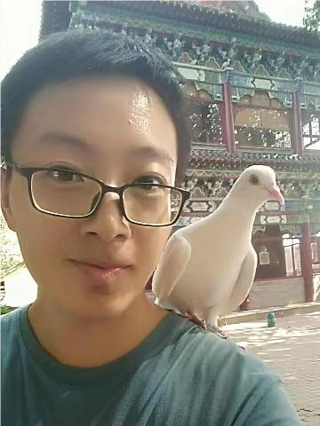

|  | Graduate Student 95 Zhongguancun East Road, Beijing 100190, P.R. China. |
I am a PhD student in the National Laboratory of Pattern Recognition at Institute of Automation, Chinese Academy of Sciences advised by Cheng-Lin Liu and Xu-Yao Zhang. I obtained my B.E. from the Department of Mechanical Engineering at Tsinghua University.
My research interests include topics in pattern analysis and machine learning. My goal is to make machine learning systems more reliable (e.g., failure detection/prediction) and adaptable (e.g., continual/incremental/lifelong learning).Learning by Seeing More Classes.
Fei Zhu, Xu-Yao Zhang, Rui-Qi Wang, Cheng-Lin Liu.
IEEE Trans. Pattern Analysis and Machine Intelligence (TPAMI'2023), 2023. [PDF]
OpenMix: Exploring Outlier Samples for Misclassification Detection.
Fei Zhu, Zhen Cheng, Xu-Yao Zhang, Cheng-Lin Liu.
In Proc. of the IEEE/CVF Conference on Computer Vision and Pattern Recognition (CVPR'2023), 2023. [arXiv]
Rethinking Confidence Calibration for Failure Prediction.
Fei Zhu, Zhen Cheng, Xu-Yao Zhang, Cheng-Lin Liu.
In Proc. of the 17th European Conference on Computer Vision (ECCV'2022), 2022. [PDF]
Prototype Augmentation and Self-Supervision for Incremental Learning.
Fei Zhu, Xu-Yao Zhang, Chuang Wang, Fei Yin, Cheng-Lin Liu.
In Proc. of the IEEE/CVF Conference on Computer Vision and Pattern Recognition (CVPR'2021), 2021. [PDF]
Class-Incremental Learning via Dual Augmentation.
Fei Zhu, Zhen Cheng, Xu-Yao Zhang, Cheng-Lin Liu.
In Proc. of the 35th Conference on Advances in Neural Information Processing Systems (NeurIPS'2021), 2021. [PDF]
Calibration for Non-Exemplar Based Class-Incremental Learning.
Fei Zhu, Xu-Yao Zhang, Cheng-Lin Liu.
In Proc. of International Conference on Multimedia and Expo (ICME'2021), 2021. [PDF]
Class Incremental Learning: A Review and Performance Evaluation (In Chinese).
Fei Zhu, Xu-Yao Zhang, Cheng-Lin Liu.
Acta Automatica Sinica, 2023. [PDF]
Adversarial Training with Distribution Normalization and Margin Balance.
Zhen Cheng, Fei Zhu, Xu-Yao Zhang, Cheng-Lin Liu.
Pattern Recognition, 2023. [PDF]
Training with Scaled Logits to Alleviate Class-level Over-fitting in Few-shot Learning.
Rui-Qi Wang, Fei Zhu, Xu-Yao Zhang, Cheng-Lin Liu.
Neurocomputing, 2023. [PDF]
Decoding lip language using triboelectric sensors with deep learning.
Yi-Jia Lu*, Han Tan*, Jia Cheng*, Fei Zhu, Bing Liu, Shan-Shan Wei, LinHong Ji, Zhong-Lin Wang.
Nature Communications, 2022. [PDF]